menu of the main RSIGuard window and select Settings.
menu of the main RSIGuard window and select Settings.
ErgoCoach is a group of toolsets that help you work more effectively with:
Take some time to explore each ErgoCoach toolset that applies to you.
Click here to learn more about ErgoCoach training methodology and custom trainings.
To explore ErgoCoach functionality, click the Tools menu of the main RSIGuard window and select Settings.
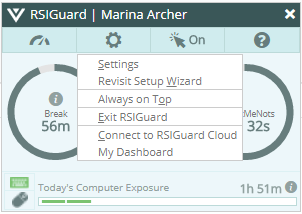
Then, select the ErgoCoach tab.
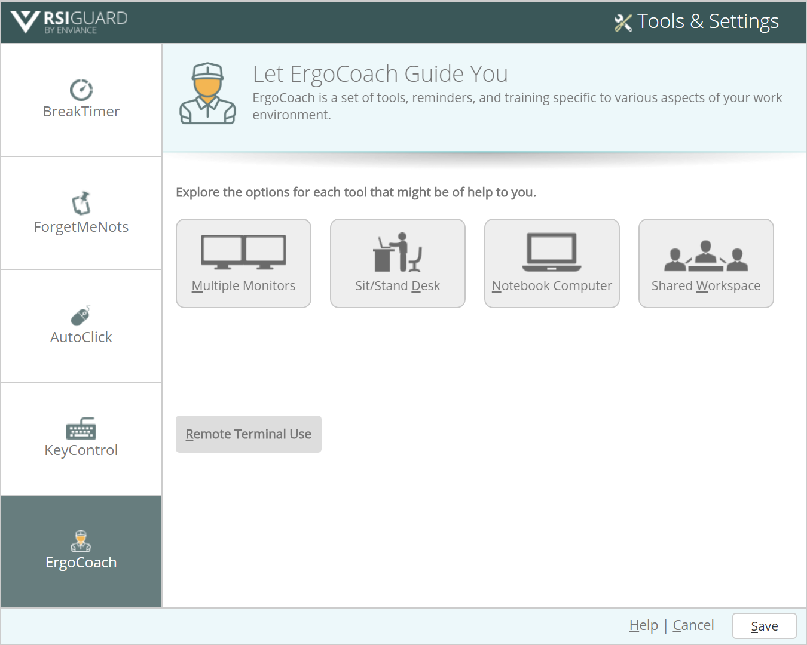
Each ErgoCoach component consists of tools to address a particular aspect of your computing environment. To explore each section, click on the appropriate toolset button, or press the shortcut key (e.g., Alt+M for Multiple Monitors).
These 4 tools are available for users of two or more monitors:
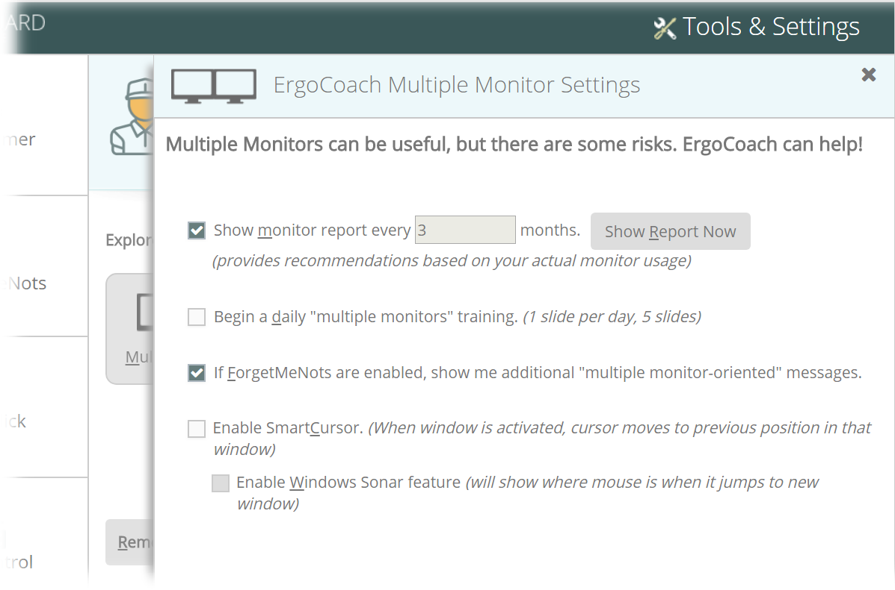
Monitor Optimization Report
By noting the location of your mouse cursor, where you're typing, and various other techniques, ErgoCoach can estimate where you spend most of your time looking at your monitors. Additionally, ErgoCoach can query Windows for details about the dimensions of your monitors. Combining this information with research data on ideal neck rotation, flexion, and extension, ErgoCoach provides you with custom recommendations about monitor placement to match your particular situation.
Click Show Report Now to view your recent monitor usage and, based on that usage, recommendations on how best to set up your monitors. You can also check the Show monitor report every X months box to be presented with a report periodically (e.g., every 3 months).
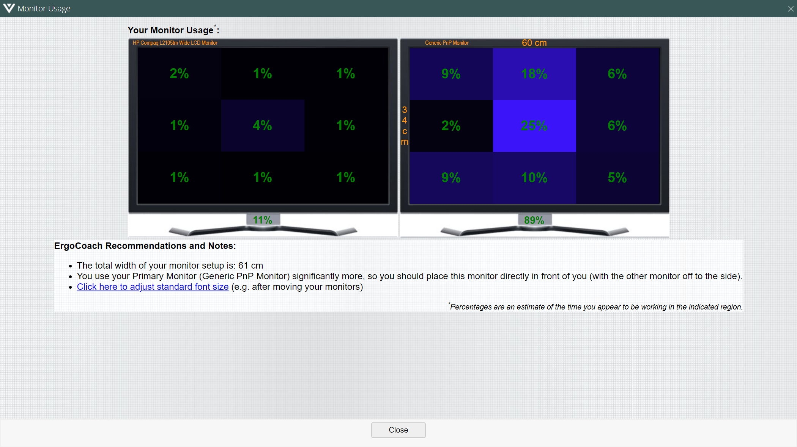
The Multiple Monitor daily training provides useful information about the optimal use of multiple monitors. The training is presented over 5 slides, shown one per day, to make it easier to absorb the information.
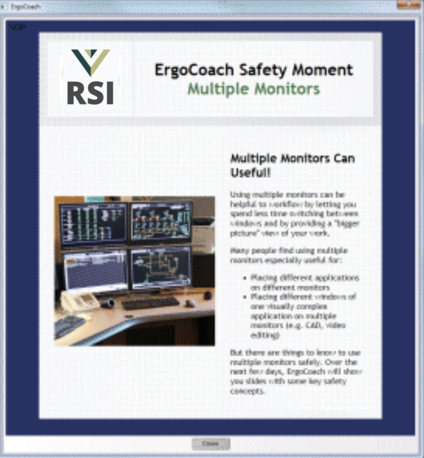
If you use the ForgetMeNots feature, enabling this setting will add several reminder messages to your ForgetMeNots message rotation. These will keep you aware of your use of multiple monitors.
One of the issues with using multiple monitors occurs when you switch between applications: you generally have to move your mouse pointer some distance. SmartCursor addresses this issue by remembering where your cursor was last positioned within each application. If you use Alt-Tab to move to a different application, the mouse automatically jumps to the last position within that application. This requires a new work pattern, but it can help you avoid considerable mouse or pointer movement.
Notebook Computer Tools
The following 3 tools are available for users of notebook computers:
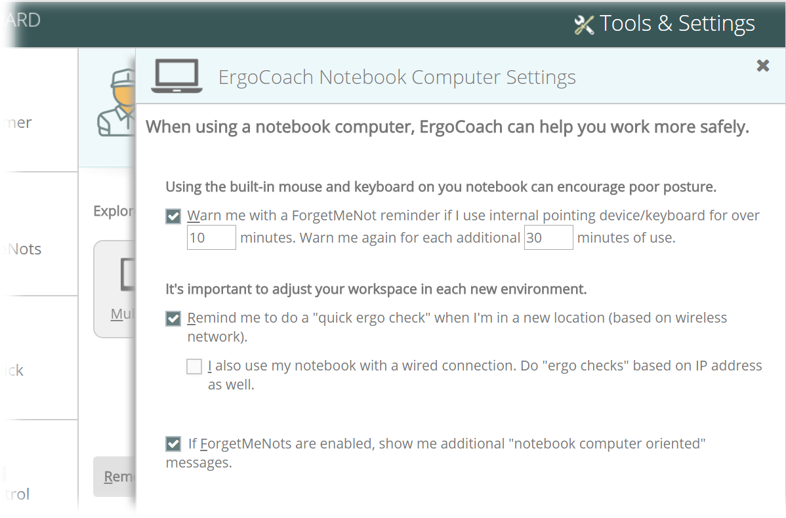
Using the built-in keyboard, mouse and monitor of a notebook computer often lead to poor posture.
There are various issues associated with narrow built-in keyboards and awkward built-in pointing devices. And the built-in monitor of a notebook is relatively low leading to neck flexion (tilting your head down). If you raise the monitor, the keyboard and mouse are no longer accessible. If you plan to work on your notebook for an extended period, one possible solution is to attach an external keyboard and pointing device (e.g., mouse) and place the notebook on a notebook riser.
In the Warn me with a ForgetMeNot reminder box, specify how long you can use the built-in keyboard or pointer before RSIGuard reminds you to start using external devices. You can configure a Warn me again setting to periodically remind you again if you keep using the built-in devices.
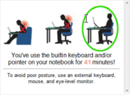
When you use your notebook computer on the go, it's important to take a moment to check the basic ergonomics of how you are working in the new location. If enabled, then when you connect to a new wireless network (i.e., typically an indication that you are in a new location) ErgoCoach will remind you to review the basic ergonomics for that kind of location. You can tell ErgoCoach what kind of location you are in, and it will remember that the next time you're in the same location.
If you also connect your laptop to wired Ethernet connections, check the "wired connection" box and ErgoCheck will also prompt you to do a quick ergo check based on IP address (this only works for static IP addresses).
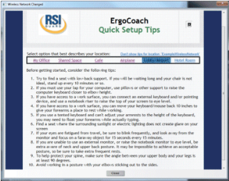
If you use the ForgetMeNots feature, enabling this setting will add several reminder messages to your ForgetMeNots message rotation. These will keep you aware of your notebook use.
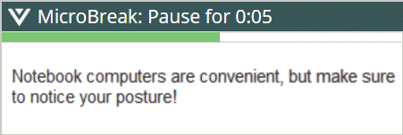
The following 3 tools are available for users of sit-stand desks (standing desks):
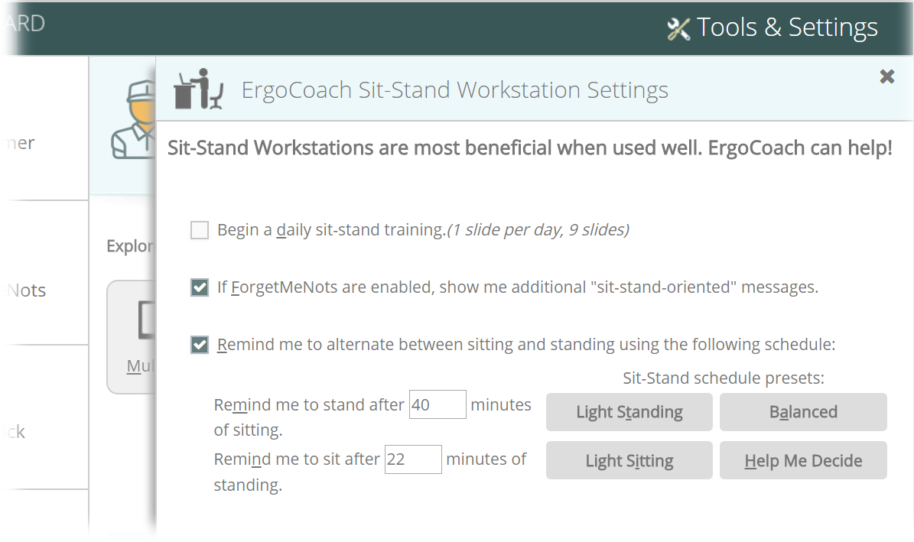
The Sit-Stand Workstation daily training provides useful information about best practices with sit-stand workstations. The training is presented over 10 slides, shown one per day, to make it easier to absorb the information.
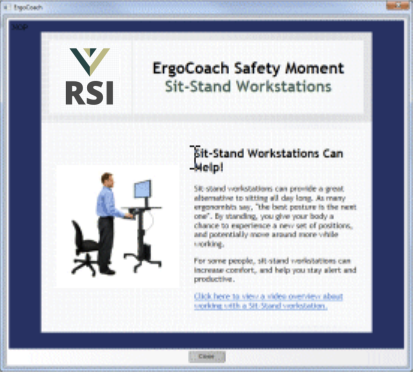
If you use the ForgetMeNots feature, enabling this setting adds several reminder messages to your ForgetMeNots message rotation. These will keep you aware of your sit-stand workstation use.
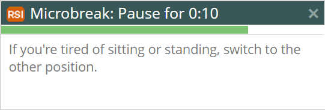
Research suggests there are health benefits to varying between sitting and standing. Different people prefer to sit and stand for different lengths of time. This feature reminds you to switch between standing and sitting and makes it easy to adjust your schedule dynamically (e.g., sit a little longer, or switch whenever you feel like it).
You can specify how long you want to stand before ErgoCoach reminds you to sit, and how long you want to sit before ErgoCoach reminds you to stand.
When it's time to switch, ErgoCoach shows a Time to Stand or Time to Sit notification near the system clock.
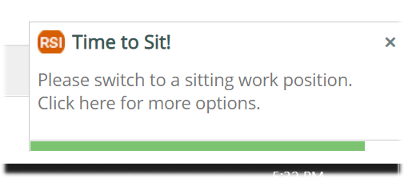
If you're not ready to switch positions, or if you are already in the position RSIGuard is suggesting (e.g., when you come back to the computer after a meeting, RSIGuard doesn't know if you are sitting or standing), click the notification to update ErgoCoach.
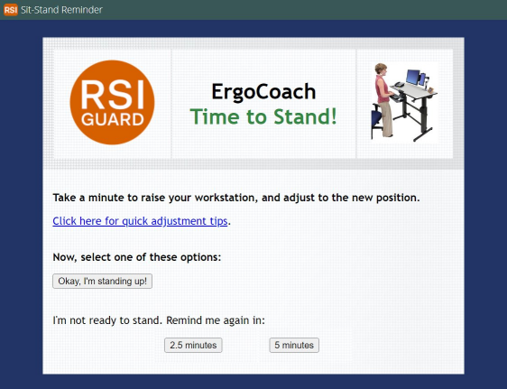
Current recommendations for the ratio of standing to sitting vary from 1:3 to 1:1. The preset schedules provided by ErgoCoach are:
Extended periods of standing are associated with low-back and leg discomfort, so avoid standing too much. For example, a Canadian study found that half of the participants who regularly stood for 2 hour periods developed new low-back discomfort. Pay attention to your body. If you are uncomfortable at the end of your standing periods, consider shorter standing periods. Comfortable footwear can help.
Shared Workspaces Tools
The following two tools are available for working at shared workstations.
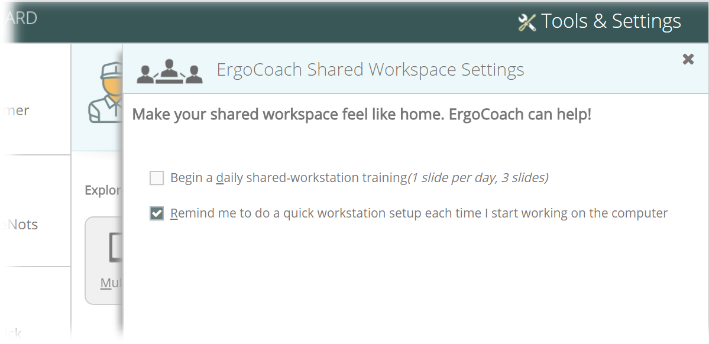
The Shared Workstation daily training provides useful information about best practices for people who share workspaces and/or do not work at one fixed location. The training is spread out over 3 days to make it easier to absorb the information.
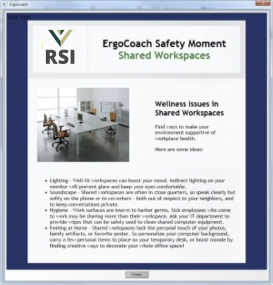
Because shared workstations are used by different people, it's important to do an ergo check-in each time you start at a new workstation. This feature reminds you to go through a basic ergo checklist to help ensure that the workstation is adjusted to your needs.
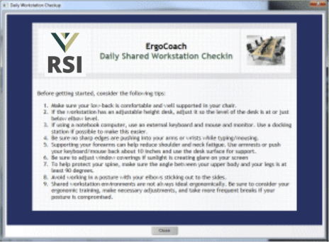
The following tool is designed for use with remote and virtual workstations:
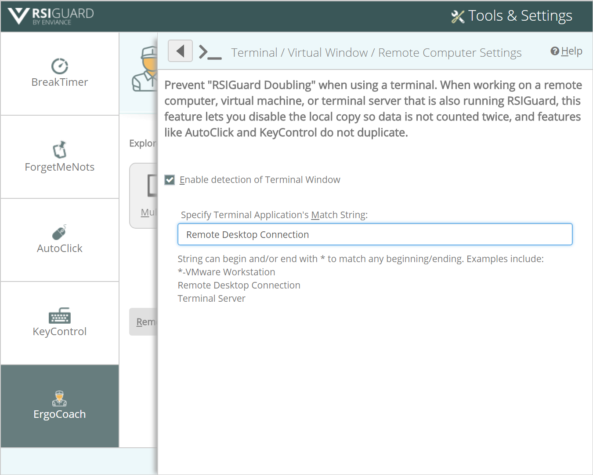
Because remote/virtual workstations are essentially a computer within a computer, if RSIGuard is running on the real physical computer, as well as the remote/virtual computer, both instances of RSIGuard will count keystrokes and mouse events that occur on the remote/virtual computer.
By letting the copy of RSIGuard on the physical computer know that you are using RSIGuard on a virtual machine, it will automatically stop counting events (as well as turn off local features like AutoClick and KeyControl that should only be active on one instance of RSIGuard at a time).
The Terminal Application's Match String can be either:
For organization managers, you can review ErgoCoach training content and learn how your organization can add new training content by viewing this document.